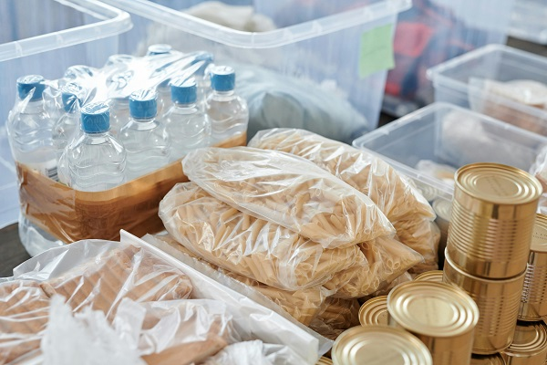
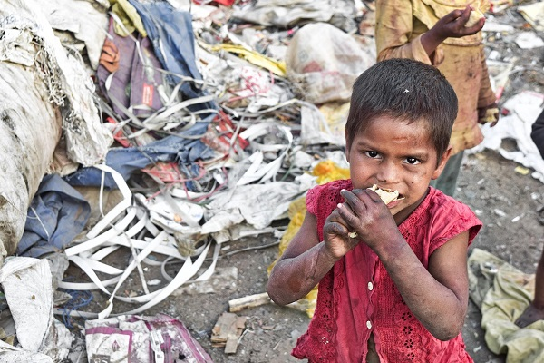
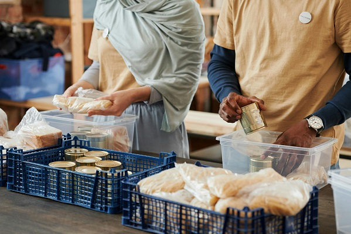
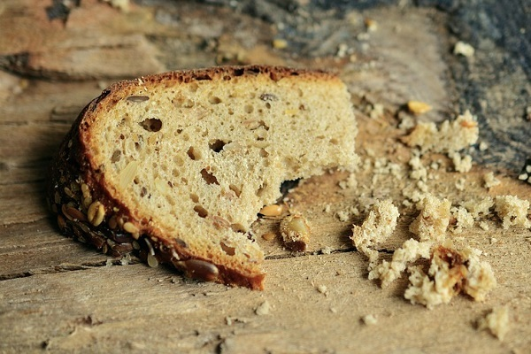

Understanding Zero Hunger
What is Zero Hunger??
All people deserve yearly access to enough safe and nutritious sufficient food under the global initiative Zero Hunger. The elimination of hunger and all forms of malnutrition along with sustainable food production sets as the United Nations' Sustainable Development Goals (SDG #2) with 2030 as its deadline. Hunger continues to be a widespread worldwide issue which confronts millions of people especially in countries that are developing along with zones experiencing conflict. Through its Zero Hunger project the initiative concentrates on developing food systems while enhancing agricultural outcomes and minimizing food waste and guaranteeing food availability to low-income populations alike. This goal remains fundamental to enhance health while stimulating development and building a more balanced and lasting society.
The Global Hunger Crisis: Facts and Figures
The world faces hunger as its most critical humanitarian problem because millions of people lack sufficient food during this era because of poverty alongside conflict and environmental changes and financial uncertainty. The Food and Agriculture Organization (FAO) in 2023 reports that hunger affecting over 735 million people exists across the world. Under five youth numbering 45 million experience severe malnutrition leading to growth stunting and reduced immunity together with increased mortality rates.
Rural regions experience the worst consequences because 70% of hunger-stricken people in the world rely on agriculture for their survival although they cannot obtain modern farming methods or access land or financial backing. Hunger in vulnerable regions becomes worse when both wars and natural disasters disrupt food production as well as distribution networks. The global food supply is sufficient to feed every person but difficulties in distributing food equally and poor distribution along with waste cause hunger. The global food systems demonstrate extensive inefficiencies because 1.3 billion tons of food escape waste annually. Global authorities along with organizations and communities need to implement immediate solutions to tackle these problems.
The United Nations' Sustainable Development Goal #2: Zero Hunger
SDGs emerged at the United Nations in 2015 and SDG #2 represents their commitment to reach Zero Hunger by 2030. SDG #2 targets the elimination of hunger while it works to enhance nutrition and develop environmentally sustainable farming techniques for upcoming generations. The four fundamental objectives of SDG #2 are providing everyone with nutritious food and eliminating all nutritional deficiencies as well as boosting agricultural production and strengthening food system sustainability.
According to the UN various agricultural investments must be focused on small-scale farmers as they cultivate substantial parts of worldwide food production. The sustainable food production practices must encompass environmentally respectful farming techniques alongside comprehensive soil protection and decreased food waste measures. Governments should create social protection systems which include food aid programs together with school meal initiatives to help needy communities. The achievement of some regional milestones remains positive but ongoing conflicts and economic imbalances and environmental changes maintain a significant pace of slow-down. The elimination of hunger needs every country to work alongside corporations and citizens to provide everyone access to sufficient nourishment.
The Link Between Hunger and Poverty
Hunger exists closely with poverty as they create an ongoing cycle that drives millions into persistent desperate living conditions. Persons whose income falls below poverty level lack money to purchase nourishing food and make farming investments and obtain medical care which creates conditions for starvation and lowers their workforce ability. The lack of needed nutrition causes individuals to face work inefficiencies along with difficulties maintaining financial stability and developing living conditions which perpetuates their destitution.
Developing countries experience sustained practical challenges that prevent farmers from getting to food markets or obtaining agricultural equipment. Displacement of vulnerable populations as well as conflicts force individuals to endure extreme hunger along with poverty because they lose access to their homes, their employment and sustainable means of sustaining life. Gender inequality in various regions restricts women along with children from property ownership which prevents their total workforce participation.
A transformation of this pattern demands powerful economic frameworks united with educational investments alongside job establishment programs which support small-scale agriculturists. Better wages coupled with social protection programs and sustainable agricultural strategies together create food security and successfully raise millions from poverty while providing proper nutrition to everyone. Public bodies need to unite with organizations to create equal opportunities for development of farming and decrease inequality in order to fight global hunger and poverty successfully.